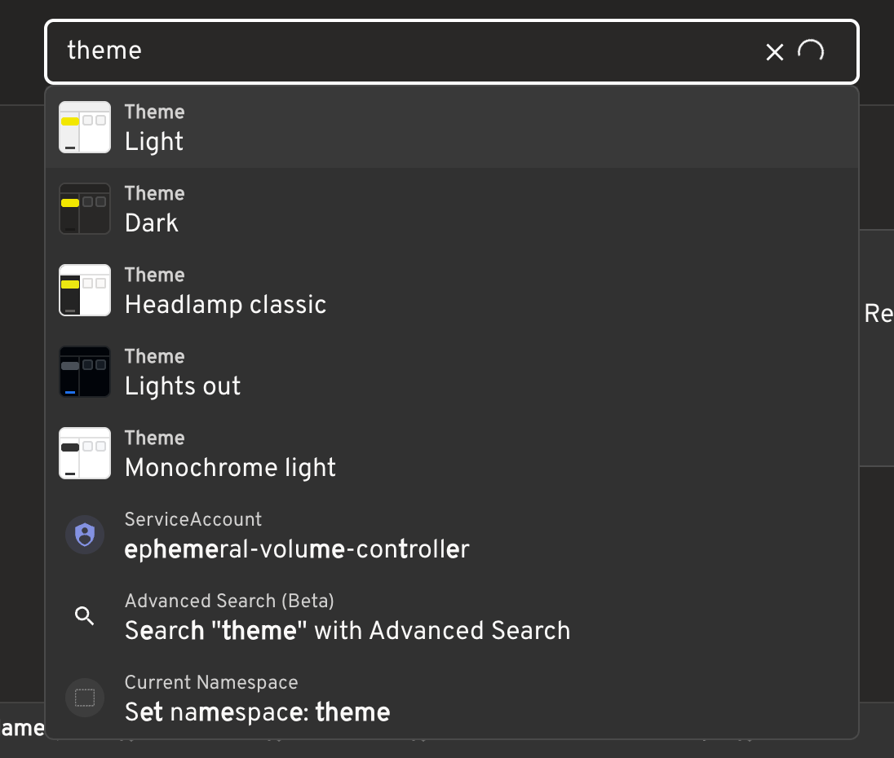

While using Headlamp to manage Kubernetes clusters, I noticed the global search box in its top bar.
Type a Pod name, a namespace, or even a resource kind, and it quickly takes you to something useful. At first, I assumed it was backed by a cluster search service: perhaps the query was sent to the Kubernetes API and the backend returned fuzzy matches.
After looking into the implementation, the idea turned out to be much simpler: load resource lists into the frontend, then perform fuzzy matching in the browser.

The Kubernetes API does not offer general fuzzy search
The Kubernetes API supports filtering resources with label selectors, field selectors, and similar conditions. For example, you can select a set of Pods by label.
It does not, however, provide general-purpose queries such as:
1 | Find every resource whose name roughly contains nginx |
So Headlamp does not hand the user’s input to the Kubernetes API and ask it to fuzzy-match resources.
It gathers candidate resources first
When you open the search box, or press the default / shortcut, Headlamp starts preparing its search data. It lists several Kubernetes resource kinds, including:
- Pods
- Deployments
- Services
- Jobs and CronJobs
- ConfigMaps
- Namespaces
- StatefulSets and ReplicaSets
- PVCs, Ingresses, Nodes, ServiceAccounts, and more
For namespaced resources such as Pods, Headlamp sends a separate List request for each namespace that the current cluster configuration allows, then merges the results into one frontend resource list.
For example, if access is limited to:
1 | default |
the Pod data comes from list requests for those three namespaces. If no namespaces are configured, it uses a cluster-wide list request instead. Kubernetes RBAC still determines what the current user can actually see.
The actual search happens in the browser
Once the lists reach the frontend, Headlamp turns each object into a searchable item. In addition to a resource name, the item carries details such as its kind, namespace, labels, and display metadata.
It then uses Fuse.js for local fuzzy matching.
That means a query like:
1 | coredns kube-system |
does not produce a fuzzy-search request to the API server. Instead, Headlamp searches the candidates it has already loaded. Multiple words behave more like an AND condition: a result needs to match both coredns and kube-system, though they can match different fields—for example, the resource name and namespace respectively.
An input such as:
1 | app=coredns |
can also serve as a label-matching hint.
To avoid noisy results, Headlamp uses a relatively strict Fuse.js threshold and caps the number of displayed matches. It can also highlight the parts that matched.
It is more than Kubernetes resource search
The top-bar search does not only contain Kubernetes objects. It also includes items that can take you somewhere or perform an action, such as:
- cluster switching;
- page navigation;
- namespace settings;
- theme switching;
- keyboard shortcut settings;
- a suggestion to open Advanced Search.
That makes it closer to a combination of resource navigator and command palette than a Pod search box.

Why does it feel so up to date?
After retrieving the initial resource lists, Headlamp also uses Kubernetes Watch to keep receiving changes. When a Pod is created, updated, or deleted, the resource collection maintained by the frontend is updated as well.
The flow looks roughly like this:
1 | Kubernetes List retrieves the initial state |
Where does this approach fit?
The advantages are clear: no separate search service is required, results feel responsive, and resources, pages, and actions can share a single entry point.
It is not a cluster-scale search engine, though. In a large cluster or across many clusters, the expensive part is less likely to be Fuse.js itself than fetching and continuously maintaining a large resource inventory in the frontend.
Headlamp’s top-bar search is therefore best suited to navigation: you roughly know what you need and want to get there quickly. Searching large volumes of YAML across clusters, complex full-text queries, historical state, or consistently low latency for hundreds of thousands of objects calls for a dedicated indexing service instead.
A final thought
Headlamp does not depend on a fuzzy-search feature in the Kubernetes API. It combines Kubernetes List and Watch with Fuse.js in the frontend. What looks like a global search feature is really a carefully maintained resource view paired with a convenient interaction layer.
This is a pattern I keep noticing in cloud-native systems. Infrastructure software often tries to build directly on Kubernetes-native capabilities: use List to get the initial state, Watch to keep it current, then add the interaction or workflow it needs on top of a local cache or UI layer. It will not solve every problem, but it avoids introducing another component, storage system, and operational burden—and it naturally retains Kubernetes’ RBAC and resource model.
Large-scale full-text search still deserves a purpose-built indexing service. But for navigation, filtering, aggregation, or lightweight status checks over the resources a user can already see, Headlamp’s approach is worth keeping in mind. Before adding another service, it is often worth asking: can List, Watch, labels, and resource status solve this first, with a small and fresh local view?
Quite often, they can. Headlamp does not try to become a search engine; it turns visible cluster resources into a useful navigation entry point. That restraint is what makes the feature fit naturally into the way cloud-native systems already work.